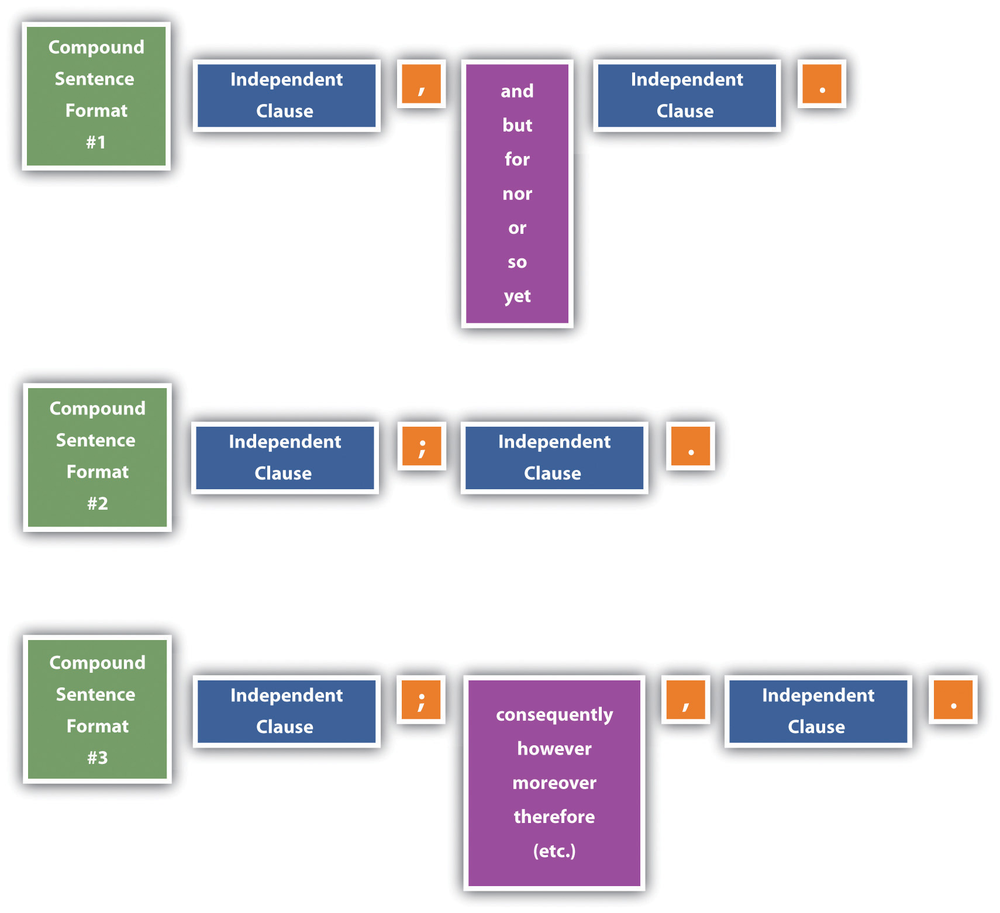

Almost everyone finds punctuation challenging at least occasionally. Although it might be unrealistic to know the correct punctuation in every situation, you can certainly learn to make the correct choice most of the time. When you are uncertain, don’t guess. Handbooks such as this one, as well as a variety of websites, are close at hand. Take the time to look up a rule when you are not sure.
Sometimes, as with many other features of grammar and mechanics, you may look up a rule and find more than one answer or even a raging debate about what is currently acceptable. That’s because usage (the way people actually use a living language) changes over time, thus muddying the rules. But by doing your research, at least the choices you make will be within an accepted range of options.
Commas are to readers as road signs are to drivers. Just as a driver might take a wrong turn if a sign is missing or misplaced, a reader cannot traverse a sentence meaningfully when commas are not properly in place.
Commas set introductory words, phrases, and clauses apart from the rest of a sentence. This separation serves to signal a reader to pause and to give words a chance to have meaning without interference from other words.
Single-word example: Afterward, fans came backstage and surrounded the actors and actresses.
Phrase example: Without an invitation, fans swarmed backstage in excitement.
Clause example: After the fans began to head to their cars, the actors and actresses took their first break in two hours.
A series is a list embedded in a sentence with a conjunction, typically the word “and,” between the last two items in the list. Without the commas, a series can be quite confusing.
Series in a sentence without commas: Penny’s costume included a long blue dress a red bonnet black lace-up shoes a heavy gold pendant on a chain and a very-full petticoat.
With a little work, a reader can possibly identify the five items that made up Penny’s costume. But the sentence is confusing and requires too much work to read. Inserting commas makes reading this sentence very easy and clear.
Series in a sentence with commas: Penny’s costume included a long blue dress, a red bonnet, black lace-up shoes, a heavy gold pendant on a chain, and a very-full petticoat.
Some usage experts promote the idea that the comma immediately before the conjunction is optional since it has fallen out of universal use. However, it is still wise to use it to avoid inadvertent confusion.
When a sentence is made up of two independent clauses joined by a coordinating conjunctionA word used to link two independent clauses in a compound sentence (e.g., and, but, for, so, nor, or, yet); when used in this way, it is preceded by only a comma. (and, but, for, nor/or, so, yet), a comma is needed between the two clauses. Remember that an independent clause must have both a subject and a verb and be able to serve as a stand-alone sentence. (See Chapter 15 "Sentence Building", Section 15.1 "Incorporating Core Sentence Components (Avoiding Fragments)" for more on sentence components.)
Example of a compound sentence with two independent clauses: Mitch arrived an hour early for the first rehearsal, and he spent the time looking through the costume closets.
Example of a sentence with two clauses, one of which is not independent: Mitch arrived an hour early for the first rehearsal and spent the time looking through the costume closets.
To create interest and increase clarification, you may want to add words and phrases to basic sentences. These additional pieces often function as add-ons that are not essential to the core meaning of the sentence and do not change the meaning of the sentence. You should separate such words and phrases from the rest of the sentence. Some examples of nonessential wordsA word that is in a sentence but could be removed without changing the core meaning of the sentence. include adjective phrases and clauses, words of direct address, interjections, and appositives.
Some adjective phrases and clauses are essential to the meaning of a sentence and some are not. If they are essential, no comma is needed. If the meaning of the sentence would be intact if the phrase or clause were removed, a comma is needed. You can identify adjective clauses since they often begin with the relative pronouns where, when, which, who, whom, whose, or that.
Comma needed: To Kill a Mockingbird, which was Malik’s first play, lasted almost two hours.
A comma is needed because, even without the adjective phrase, the reader would know that the play lasted for two hours.
Commas not needed: Actors who give constant effort can inspire others in the cast to do well.
A comma is not needed because the phrase “who give constant efforts” clarifies which actors are being referenced within the sentence. Since the sentence meaning would not be complete without the phrase, no comma is needed.
Some sentences name the person being spoken to. A person’s name that is used in this way is called a noun in direct addressA noun that names the person being spoken to within a sentence.. Since naming the person does not change the meaning of the sentence, you should separate such a name from the rest of the sentence.
Your performance, Penny, was absolutely amazing!
Some words interrupt the flow of a sentence but do not actually change the meaning of the sentence. Such words are known as interjectionsA word that interrupts the flow of a sentence but does not actually change the meaning of the sentence. and should be set apart from the rest of the sentence with commas. Aside from “yes” and “no,” most interjections express a sudden emotion.
AppositivesA noun or noun phrase that restates an immediately preceding noun or noun phrase. are nouns or noun phrases that restate an immediately preceding noun or noun phrase.
Malik’s first play, To Kill a Mockingbird, had six performances.
Malik only has one “first” play, so the title of the play is a restatement of “Malik’s first play.” Since this sentence is complete with all meaning intact even if the words “To Kill a Mockingbird” were removed, the words need to be separated with commas.
My husband, Kyle, has visited the To Kill a Mockingbird museum in Monroeville.
Since “my husband” identifies a single person, the name “Kyle” merely restates his identity and thus adds no new information. Therefore, “Kyle” should be set apart with commas.
You should place a comma between coordinate adjectivesDouble adjectives that are not joined with the word “and” but that could be joined with the word “and” or could be rearranged and still work fine. that are not joined with the word “and.” Coordinate adjectives are double adjectives and can be joined with the word “and,” rearranged, or both and still work fine.
Sentence with coordinate adjectives: Atticus is a good role for Malik since Malik is a tall, stately guy.
This sentence requires commas since Malik could be “a stately, tall guy,” or he could be “tall and stately,” or he could be “stately and tall.”
Do not use commas between cumulative adjectives. Cumulative adjectivesConsecutive adjectives that build on each other in meaning. build on each other, modify the next one in line, and do not make sense if rearranged.
Sentence with cumulative adjectives: Atticus Finch is a dedicated defense attorney.
This is a cumulative adjective situation because it would not work to rearrange the adjectives to say “defense dedicated attorney” or “dedicated and defense attorney.” Therefore, no commas are needed in this example; the adjective “defense” modifies “attorney” and the adjective “dedicated” modifies “defense attorney.”
You should use a comma prior to or just after the quotations in dialogue. Also, use a comma before a direct quotationThe exact word or words spoken. when preceded by a verb such as declares, says, or writes.
Comma before dialogue: Jem said, “There goes the meanest man that ever took a breath of life.”
Comma after dialogue: “The one thing that doesn’t abide by majority rule is a person’s conscience,” said Atticus Finch.
No comma needed before or after a direct quotation that is not preceded by a verb: According to Miss Maudie Atkinson, Atticus “can make somebody’s will so airtight you can’t break it.”
No comma needed before or after an indirect quotation: Atticus told Jem that it was a sin to kill a mockingbird.
Details such as dates, addresses, geographic names, company names, letter and e-mail components, titles that go with names, and numbers all require commas when used in text and sometimes when used alone.
When a date is written in month–day–year order in isolation, you need to use a comma between the day and year.
December 25, 1962
When a date is written in month–day–year order within a sentence and does not fall at the end of the sentence, you need to use a comma between the day and year and between the year and the rest of the sentence.
On December 25, 1962, the movie To Kill a Mockingbird opened in theaters.
When an address is written in mailing format, commas are needed between the city and state.
Old Courthouse Museum
Courthouse Square
31 N. Alabama Ave.
Monroeville, AL 36460
When an address is written within running text, commas are needed between the city and state as well as between each of the “lines” of the address and between the address and the rest of the sentence if the address does not fall at the end of the sentence.
Annual performances of To Kill a Mockingbird are performed in the Old Courthouse Museum, Courthouse Square, 31 N. Alabama Ave., Monroeville, AL 36460, near where author Harper Lee grew up.
Use a comma after each item within a place name when the place name is used in running text, even when it is not part of a complete address.
Atticus Finch lived and worked in the fictitious city of Maycomb, Alabama, which many assume is patterned somewhat after Monroeville, Alabama, where the author grew up.
Company names that include “incorporated” or “limited” (or the like) require a comma between the name and “Inc.” or “Ltd.” only when a comma is placed there as part of the official company name. Check for letterhead or the company’s website for clarification on its preferred usage.
Invesco Ltd.
Replacements, Ltd.
Citigroup, Inc.
Citizens Inc.
When “incorporated” or “limited” is part of a company name within a sentence, a comma is needed between the word and the rest of the sentence only when a comma precedes it.
Citigroup, Inc., is making some noise in the banking industry lately.
Invesco Ltd. started out slowly in that sector of the market.
Commas are used to separate letter and e-mail components both in isolation and within running text.
Use commas to set off descriptive titles that follow names. However, don’t use a comma before “Jr.” or “III” (or the like) unless you know the person prefers a comma.
Within text, include a comma both before and after the descriptive title to set it off from the whole sentence.
Atticus Finch, attorney-at-law, at your service.
In numbers with more than four digits, begin at the right and add a comma after every third digit. In a four-digit number, a comma is omitted in page and line numbers, addresses, and years, and it is optional in other cases. No commas are used in numbers with less than four digits. Numbers are treated exactly the same when used in text.
In an Internet search for “reviews of To Kill a Mockingbird,” 2,420,000 results surfaced.
Sometimes you simply have to use a comma to avoid confusion. For example, when a word is removed for effect, a comma can sometimes make up for the missing word.
To perform is a skill; to transform, art.
When two like or nearly like words are placed side by side, a comma can sometimes help clarify the intended meaning.
The whole cast came walking in, in full costume.
Sometimes you will need to use a comma so the reader understands how the words are to be grouped to attain the author’s desired meaning. Read the following example without the comma and note the difference.
Fans who can, come each year to see the annual To Kill a Mockingbird performance.
Add commas as needed to write each of these sentences correctly.
To use or not to use? That is the question when it comes to commas. Just as you want to be sure to use commas in all the correct places, you also want to make sure to avoid using commas when you don’t need them.
Do not use commas before a conjunction when the sentence is not compound.
No comma: Scout thinks Calpurnia is harshX and unfairly gets Atticus on her side.
Do not use a comma before the first and after the last word in a series.
No comma: The actorsX Gregory Peck, Phillip Alford, Estelle Evans, Robert Duvall, and Mary BadhamX play some of the main characters in the To Kill a Mockingbird movie.
Do not use commas around an appositive if it adds clarity, or new information, to the sentence. For example, in the following sentence, “Joey” identifies which cousin played the part.
No comma: My cousinX JoeyX once played the part of Atticus Finch.
Do not use a comma to set off an adverb clause that is essential to the sentence’s meaning. Adverb clauses are usually essential when they begin with after, as soon as, because, before, if, since, unless, until, or when.
No comma: Scout was surprised when Calpurnia kissed herX because she didn’t think Calpurnia liked her much.
Do not use a comma around a word that could be viewed as an interjection if using the comma would cause confusion or interruption in the sentence.
No comma: Scout isX basicallyX a tomboy.
Do not use a comma after although, such as, or like.
No comma: Mayella didn’t seem believable because of her actions, such asX changing her mind on the stand.
Do not use a comma after a coordinating conjunction (and, but, for, nor, or, so, and yet).
No comma: Jem called Atticus by his first name, soX it seemed natural for Jem to do it as well.
Do not use a comma along with a period, question mark, or exclamation point inside of a quotation.
No comma: “Don’t you remember me, Mr. Cunningham?X” asked Scout.
For each sentence, add and/or remove commas (replacing a comma with X) or indicate that no changes are needed.
Two of the most common problems people have with compound sentences are comma splicesA sentence with two independent clauses joined by a comma instead of a semicolon or a comma followed by a coordinating conjunction. and fused sentencesA run-on sentence; a sentence with two independent clauses joined without punctuation.. The key to understanding these problems is to recognize the possible compound sentence formats:
Figure 18.1
Two different situations can result in comma splices.
Problem: A comma joins independent clauses instead of the clauses being joined by a comma followed by a coordinating conjunction.
Example: Her name was Jean Louise Finch, she wanted everyone to call her “Scout.”
Correction: Her name was Jean Louise Finch, but she wanted everyone to call her “Scout.”
Problem: A comma joins two independent clauses when a semicolon should be used.
Example: Atticus didn’t want Scout to fight, however, she could not ignore injustices.
Correction: Atticus didn’t want Scout to fight; however, she could not ignore injustices.
A fused sentence is also called a run-on sentence and occurs when two independent clauses are joined without any punctuation.
Mr. Cunningham is very poor he cannot pay Atticus for legal services.
Correction option 1: Add a coordinating conjunction and a comma: Mr. Cunningham is very poor, so he cannot pay Atticus for legal services.
Correction option 2: Place the independent clauses into two separate sentences: Mr. Cunningham is very poor. He cannot pay Atticus for legal services.
Correction option 3: Place a semicolon between the two clauses: Mr. Cunningham is very poor; he cannot pay Atticus for legal services.
Correction option 4: Place a semicolon between the two clauses, and use a conjunctive adverb for further clarification: Mr. Cunningham is very poor; therefore, he cannot pay Atticus for his legal services.
Correction option #5: Turn one of the independent clauses into a dependent clause: Mr. Cunningham cannot pay Atticus for his legal services because he is very poor.
OR
Because he is very poor, Mr. Cunningham cannot pay Atticus for his legal services.
Read each compound sentence. Identify each as correctly written, a comma splice, or a fused sentence. For the comma splices and fused sentences, write a corrected version.
Write three different versions of a correctly punctuated compound sentence made up of the following pairs of independent clauses, using each of the three formats described in this section (comma plus coordinating conjunction, semicolon only, and semicolon plus conjunctive adverb). Then write a comma splice and a fused sentence using the same pair of independent clauses. Finally, make one of the clauses dependent on the other, use a subordinating conjunction (see Chapter 16 "Sentence Style", Section 16.3 "Using Subordination and Coordination"), and punctuate the sentence accordingly.
By the time you were taught how to use semicolons and colons in eighth grade or so, you were likely already set in your ways regarding punctuation. Here’s the good news: it isn’t too late to add these marks to your commonly used list and to appreciate how much they can do for your writing.
A semicolon is a punctuation mark that signals a pause that is stronger than a comma but weaker than a period. Appropriately, a semicolon (;) looks like a period on top of a comma. The standard uses for semicolons are to separate two independent clauses instead of using coordinating conjunctions, to separate two independent clauses along with a conjunctive adverb, or to clarify a series that includes other punctuation.
Compound sentences with conjunctive adverbs or without coordinating conjunctions require a semicolon. Review Section 18.3 "Eliminating Comma Splices and Fused Sentences" for additional information.
Compound sentence with a coordinating conjunction: Scout and Jem do not know much about Boo Radley, but they are afraid of him anyhow.
Compound sentence without a coordinating conjunction: Scout and Jem do not know much about Boo Radley; they are afraid of him anyhow.
Compound sentence with a conjunctive adverb: Scout and Jem do not know much about Boo Radley; nevertheless, they are afraid of him anyhow.
Typically, commas separate items in a series. Sometimes multiple-word series items include commas. In these cases, the commas within the items would be easily confused with the commas that separate the items. To avoid this confusion, you should use semicolons between these series items. You should not use semicolons to separate items in a series when the items do not include commas.
Sentence with series that results in comma confusion: In To Kill a Mockingbird, Atticus Finch defends justice, the underprivileged, and his children, teaches his kids values, and stands up to the people of the town.
Sentence rewritten using semicolons to avoid comma confusion: In To Kill a Mockingbird, Atticus Finch defends justice, the underprivileged, and his children; teaches his kids values; and stands up to the people of the town.
A colon is used to separate parts or to signal that some related information or words are coming.
Colons are used to introduce a variety of text components, including explanations and examples.
Most sets of independent clauses require a comma and a conjunction or a semicolon between them. An exception is when the second clause clearly restates or supports the first clause.
The movie To Kill a Mockingbird was very well received in Hollywood: it was nominated for eight Academy Awards.
A variety of elements call for colons to separate the details.
When the lead-in to a quotation is a complete sentence, you can use a colon between the lead-in and the quotation.
Scout spoke with her usual frankness and wisdom beyond her years: “Until I feared I would lose it, I never loved to read. One does not love breathing.”
Use a semicolon in each of these situations:
Use a colon in each of these situations:
Apostrophes are a tool for making English more streamlined. Instead of saying, “the book that belongs to Elizabeth,” you can say, “Elizabeth’s book.” Instead of saying, “I cannot come,” you can say, “I can’t come.” Although you could avoid using apostrophes, your writing will be more natural if you learn the rules for using possessives and contractions appropriately. Some people also opt to use apostrophes to form plurals in certain situations, but many usage experts continue to warn against this practice.
You form a possessive when you want to show a noun or pronoun in a sentence has ownership of another noun or pronoun.
As shown in the following table, most nouns follow standard patterns for forming plurals.
| Situation | Rule | Example 1 | Example 2 |
|---|---|---|---|
| Singular noun | Add apostrophe + -s. | dog’s collar | class’s assignment |
| Plural noun ending in s | Add only an apostrophe. | dogs’ collars | classes’ assignments |
| Plural noun ending in any letter other than s | Add apostrophe + -s. | people’s plans | women’s plans |
| Proper nouns | Follow the regular noun rules. | Finches’ family home | Atticus’s glasses |
| Business names | Use the format the company has chosen whether or not it matches possessive formation guidelines. | McDonald’s employees | Starbucks stores |
When forming the possessive of a compound nounA noun formed by two or more words, sometimes hyphenated., form the possession only on the last word. Use standard guidelines for that word.
When two or more nouns both possess another noun, form the possession only with the second noun if you are noting joint ownership. Form a possession on both nouns if each possession is independent.
Possessive pronouns (his, her, hers, its, my, mine, our, ours, their, theirs, your, yours) show possession without an apostrophe.
Indefinite pronouns (another, anybody, anyone, anything, each, everybody, everyone, everything, nobody, no one, nothing, one, other, others, somebody, someone, something) require an apostrophe to show possession.
ContractionsA shortened version of two or more words in which an apostrophe marks the missing letters. are shortened versions of two or more words where an apostrophe marks the missing letters. English has a wide range of common contractions, including those in the following table.
| Words in Contraction | Contraction | Words in Contraction | Contraction |
|---|---|---|---|
| I am | I’m | what will | what’ll |
| we are | we’re | they will | they’ll |
| what is | what’s | what has | what’s |
| can not | can’t | should not | shouldn’t |
| does not | doesn’t | do not | don’t |
In addition to the many standard contractions, people often create custom, on-the-spot contractions.
My husband’s (husband is) also coming.
As a reader, you have to use context to know if the use of “husband’s” is possessive or a contraction since the two are visually the same.
Some people choose to form plurals of individual letters, numbers, and words referred to as terms. Many usage experts frown on this practice and instead choose to form the plurals by simply adding an -s. Here are some examples of the two options, as well as methods of avoiding having to choose either option.
Situation: more than one of the letter t
Plurals using apostrophes: There are two t’s in Atticus.
Plurals without using apostrophes: There are two ts in Atticus.
Avoiding the choice: The letter t shows up in Atticus twice.
Situation: more than one of the number 5
Plurals using apostrophes: If I remember right, the address has three 5’s in it.
Plurals without using apostrophes: If I remember right, the address has three 5s in it.
Avoiding the choice: If I remember right, the number 5 shows up three times in the address.
Situation: more than one “there” in a sentence
Plurals using apostrophes: This sentence has five there’s.
Plurals without using apostrophes: This sentence has five theres.
Avoiding the choice: The word “there” is used five times in this sentence.
Use apostrophes to create contractions for these words:
Use apostrophes to rewrite the following possessive situations:
Quotation marks are used to mark dialogue, to indicate words that are borrowed, to emphasize certain details, and to help when giving credit for written works.
Quotation marks are a key component of written dialogue. All words of a dialogue must be enclosed within quotation marks to indicate that these words are the exact words of the speaker.
“The one thing that doesn’t abide by majority rule is a person’s conscience,” Atticus said.
When you talk about or summarize spoken words rather than presenting them as dialogue, you should not put quotation marks around them since you are not necessarily saying that they are the exact words the person said.
Jem once said that Boo’s dad was the meanest man alive.
As with dialogue, you also should use quotation marks to mark the exact words that you borrow from someone else.
About Harper Lee’s first interview since 1964, Paul Harris writes, “Lee has regularly turned down every interview request for decades but now, aged 79, has been tempted out of her shell by the University of Alabama.”Paul Harris, “Mockingbird Author Steps out of Shadows,” The Observer, Feb. 6, 2006.
An exception to using quotation marks around borrowed words is that lengthier quotations of others’ work (those of more than four lines of text) are set in indented block format for the sake of easier readability. Also, if you paraphrase another’s ideas in your words, you need to cite the source of the ideas, but you should not use quotation marks since the words are your own. For more on quoting and paraphrasing sources, see Chapter 22 "Appendix B: A Guide to Research and Documentation", Section 22.2 "Integrating Sources".
Use single quotation marks around a quotation within a quotation.
According to Paul Harris, Lee “did have warm words about the screenplay of her book, which was turned into the hit film starring Gregory Peck in the 1960s. ‘I think it is one of the best translations of a book to film ever made,’ she said.”Paul Harris, “Mockingbird Author Steps out of Shadows,” The Observer, Feb. 6, 2006.
Italics indicate titles of full-length books and other lengthy, completed works. To separate short works from these longer works, short works are enclosed in quotation marks rather than being placed in italics. Some examples of short works that should be included in quotation marks are articles in periodicals, book chapters or sections, essays, newspaper and magazine articles and reviews, short poems and stories, song titles, titles of television episodes, and titles of unpublished works, such as dissertations, papers, and theses.
Treatment for full-length books: I first read To Kill a Mockingbird in eighth grade.
Treatment for short works: In “A Child Shall Lead Them,” Michael Richardson suggests that Lee presents justice through the innocent eyes of a child in an effort to show its true form.
Using quotation marks is the accepted technique for identifying definitions that are used in running text.
Characters in To Kill a Mockingbird visit the apothecary, which means “drugstore.”
Quotation marks can help clarify that a word is being used in an unusual rather than in a straightforward manner. Without the quotation marks, readers might get a totally different meaning from a sentence.
If you create an original word to fit your specific needs, put the word in quotation marks to indicate to readers that the word is not a standard word.
Many accounts suggest that Harper Lee was very “Scout-like.”
It helps to know rules of using other punctuation marks in conjunction with quotation marks.
Rule: Put question marks and exclamation marks inside the quotation marks if the marks relate directly and only to the text within quotation marks. If, on the other hand, the marks relate to the whole sentence, put the marks outside the quotation marks.
Example 1: A girl in the back of the room asked, “What character did Robert Duvall play?”
Example 2: Did Mary Richards really “make it after all”?
Rule: Periods and commas always go inside the quotation marks, even if the quotation marks are only around the last word in the sentence.
Example 1: Scout asked Jem how old she was when their mother died, and Jem answered, “Two.”
Example 2: Even as an adult years later, Scout was likely to say that the summer of the trial lasted “forever,” due to the many life lessons she learned.
Rule: Place colons and semicolons outside quotation marks.
Example 1: I remember my first impression after reading Frost’s “Death of a Hired Man”: confusion.
Example 2: We had tickets to see the one-act play “Masks”; however, the blizzard hit just as we were trying to leave.
Special word usage, such as irony and made-up words, are placed in quotation marks. But do not use quotation marks just to make regular-use words stand out.
When Jem met Dill, Jem said that Dill was awfully “puny.” (The word puny should not be put in quotation marks since it is a standard word being used with its straightforward meaning.)
If you choose to use slang or colloquialisms, do not give a sense that you are apologizing for the words by putting them inside quotation marks. Choose the slang words and colloquialisms you want to use and let them stand on their own.
Calpurnia was very “down-to-earth.” (Do not put quotation marks around down-to-earth.)
Read each sentence. If a sentence should have quotation marks, add them in the correct place. If a sentence does not need quotation marks, write “no quotation marks.”
Dashes and parentheses are both used to give more importance to a word or group of words. The information enclosed by dashes and parentheses often supports the information directly before or after it.
Dashes separate emphasis-adding text from the rest of the words in a sentence. You can use one long dash to set apart text at the end of a sentence. You can use dashes before and after the text to set it apart in the middle of a sentence. Here are some uses for dashes:
Creating a sudden change in tone, thought, or ideas
Example: We had predicted that the storm would come soon—but not this soon!
Suggesting hesitation in dialogue
Example: The old lady said to the man working the register, “I’ve got an extra nickel for the little girl’s candy—that is, if she’ll take it.”
Providing a summary, an explanation, or an example
Example: The book, To Kill a Mockingbird, is narrated by Scout Finch—a character who has much in common with the tomboy childhood of the author, Harper Lee.
Parentheses allow you to interrupt the flow of your text to give additional information. They can be used in the middle of a sentence or at the end. Some uses of parentheses include the following:
Enclosing numbers in an in-text list.
Example: My mother asked me to stop on the way to visit and pick a few things up at the store: (1) a half gallon of milk, (2) a dozen eggs, and (3) a loaf of bread.
Setting apart citation components in in-text references and in reference lists.
Example: “You never really understand a person until you consider things from his point of view—until you climb into his skin and walk around in it” (Lee, p. 34).
Separating nonessential but helpful information.
Example: My dog (some sort of a terrier-spaniel mix) has a unique personality.
Specific rules guide using punctuation with parentheses. End punctuation can be placed inside parentheses if the content of the parentheses is a complete sentence. If the content inside the parentheses is part of a larger sentence, the end punctuation should go outside the parentheses. If a comma is needed, it should always be placed outside the closing parenthesis. A comma should not be used immediately before an opening parenthesis, except in the case of in-text lists (e.g., “We need to (1) go to the bank, (2) buy some cereal at the store, (3) pick up the tickets, and (4) get to the party by 7:00 p.m.”
You have three choices for end punctuation: periods, question marks, and exclamation points. End punctuation gives readers information about how to read a sentence and how to interpret the sentence.
Periods have three main uses: punctuating many abbreviations, marking the end of many sentences, and separating components in reference citations.
Some abbreviations take periods all the time, while some never take periods. You simply have to learn the category of each abbreviation or look them up as you use them.
Examples of abbreviations that end in periods: approx., Ave., Dr., etc., Jr., Mrs., Univ.
Examples of abbreviations that do not include periods: LBJ, MLK, N/A, NV, TV, DVD, IBM, UK, USA, CEO, COD, RSVP
Periods end sentences that are not questions or exclamations, such as statements, commands, and requests.
Statements
To Kill a Mockingbird is set in the early 1930s.
Commands
Over the weekend, read the first four chapters.
Requests
Please let me know at what parts of the book you get confused.
In reference citations, use periods to separate components. (For much more on documentation, see Chapter 22 "Appendix B: A Guide to Research and Documentation".)
MLA: Lee, Harper. To Kill a Mockingbird. New York: HarperCollins, 2002. Print.
OR
APA: Lee, H. (2002). To Kill a Mockingbird. New York: HarperCollins.
CMS: Lee, Harper. 2002. To Kill a Mockingbird. New York: HarperCollins.
Question marks have one main use: to end sentences that ask direct questions. They are also sometimes used to indicate questions in a series.
Question mark at the end of a sentence
Do you think Atticus encouraged Scout to be mature beyond her years, or do you think it just came naturally to Scout?
Question marks in a series
We should go to the city council meeting with three basic questions: should the housing development be placed so close to the wildlife preserve?, could a better location be found?, and how much time do we have to come up with alternatives?
When you choose to use a question mark at the end of a sentence, make sure the sentence is actually a sentence since some sentences give a sense of being a question when they are not. Such sentences are called indirect questionsA sentence that gives the sense of being a question when it really is not a question..
Jem asked Scout what she was thinking?
Correction: Jem asked Scout what she was thinking.
Exclamation points are a method of showing surprise or strong emotions in writing. To preserve the impact of an exclamation point, you should use them sparingly. Besides lessening their impact, the use of too many exclamation points is distracting for readers.
Overuse of exclamation points: This course has been very engaging! There’s never been a dull moment! The instructor has always been very helpful! She’s always there when you need her!
Proper use of exclamation points: The national debt stacked in dollar bills would be high enough to reach the moon—and back!
Write two sentences in the following categories with different, but appropriate, end punctuation:
Some hyphen usage rules are set requirements, such as in certain compound words and fractions and numbers. Other hyphen usage rules are subjective or situation-specific, such as with certain compound words, prefixes, confusing situations, and continuations to the next line of text.
Some standing compound words are written with hyphens, some as one word without a hyphen, and some as two words without a hyphen.
Examples of compound words that are written with hyphens: merry-go-round, over-the-counter, six-year-old, son-in-law
Examples of compound words that are written as one word with no hyphen: drywall, firefly, softball, toothpaste
Examples of compound words that are written as two separate words without a hyphen: high school, middle class, peanut butter, post office
Other rules for hyphens in compound words include the following:
Fractions and numbers are actually compound words and as such, could be included in Section 18.9.1 "Using Hyphens with Compound Words". But just to be clear, let’s review them briefly here.
Use hyphens to write all two-word numbers between twenty-one and ninety-nine. Also, use hyphens when writing those numbers within larger numbers. Hyphenate a fraction you are expressing as a single quantity, regardless of whether you are using it as a noun or as an adjective.
Use hyphens in certain situations to add prefixes and suffixes to words.
To join a capitalized word to a prefix
anti-American
post-Renaissance
To join a number to a prefix
pre-1960
To join a single capital letter to a word
A-team
T-shirt
To join the prefixes all-, ex-, quasi-, and self- to words
ex-neighbor
self-aware
To join the suffixes -elect, -odd, and -something to words
president-elect
fifty-odd
Sometimes a hyphen can separate two visually alike words from each other. Consider that the use of the hyphen in the first of the following two sentences helps to avoid confusion that would be generated without the hyphen.
Try these exercises without using any words that were given as examples in this section.